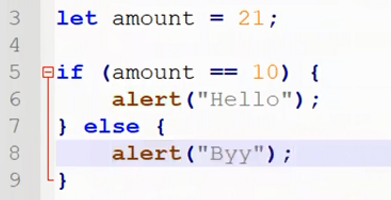
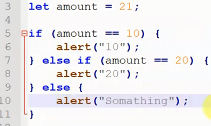

if boolean অর্থাৎ true or false নিয়ে কাজ করে ।
javascript এ কোন কাজকে শর্ত সাপেক্ষ ভাবে করা করাই if statement এর কাজ ।
যেমন মুল কথাটা হল
'' যদি এটা হয় তাহলে আমি এই কোড টা run করবো নাহয় করবো না ।
true
কিনা তার উপর । যদি ( first bracket ) এ থাকা শর্ত টা true হয় তাহলেই { socond bracket } এর কোড টা run করবে ।যেমন if statement শেখার সময় যে উধাহরন টা দেখেছিলাম সেটা হল
এটা হল if এর উধাহরন ।
If এর কাজ হল
( Jodi tumi amar barite na asho)
Else এর কাজ হল
( tahole ami tomake ghurate niye jabona)
ex:-

Result:-Else
কারন Let amount এর ভেতর store করা আছে 21 কিন্তু if এর condition এ store আছে 10
এখন এখানে যেহেতু false retrun হয়েছে if বলবে তাহলে তুমি 6 num লাইনে জেতে পারবে না ।
তো এখন তুমি 8 num লাইনের else ব্লকে চলে জাও ।
যখন if = false আসে অর্থাৎ if এর condition এর সাথে user input match করেনা তখন else Run হয় ।
else এর কোন condition থাকেনা ।
কিন্তু কখনো কখনো else এর condition দেয়ার প্রয়োজন পরে ।
তখন exeple এর else এর ও একটি condition দেওয়া হয় ।
আর তখন elas run করার ক্ষেত্রে retrun = false এর পাশাপাশি user input এর সাথে else এর condition ও মিলতে হবে ।
ex:-

এখানে যেহেতু amount এর সাথে if এর condition মিলছে না সেহেতু js else এ যাবে ।
আর else এর condition এর সাথে ও ammount এর ভ্যালু না মেলার কারনে কিছুই alert না হওয়ার কথা
কিন্তু এখানে else এর else আছে তাই এখানে কোন কিছুই alert না হওয়ার কোন chance নাই ।
এখানে else এর else alert হবে ।
এভাবে যতবার ইচ্ছা else if condition লিখা যাবে ।